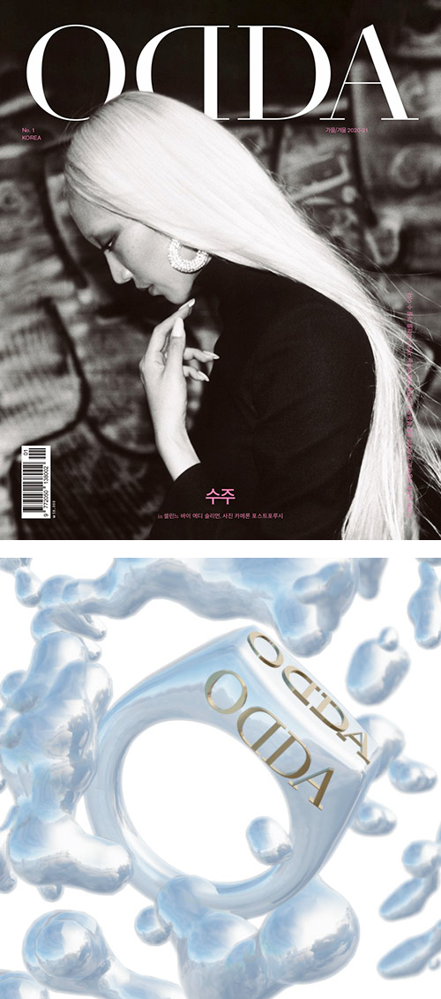

Odda Magazine / Odda Korea Drops
AR. Beauty. Fashion (2020)
“ODDA Korea is the result of combining our identity as a magazine and that of South Korea. Providing a bridge between who we are with the strong values of the Korean culture.” — ODDA Magazine
Engaging with the ultra-dewiness of Korean makeup, ODDAKoreaDrops is an Instagram filter produced for the inaugural issue of ODDA Korea. Featuring interactive water droplets accompanied by a floating signet ring.
Concept, digital makeup, 3D and AR production / Helena Dong
☁ Try ODDAKoreaDrops
AR. Beauty. Fashion (2020)
“ODDA Korea is the result of combining our identity as a magazine and that of South Korea. Providing a bridge between who we are with the strong values of the Korean culture.” — ODDA Magazine
Engaging with the ultra-dewiness of Korean makeup, ODDAKoreaDrops is an Instagram filter produced for the inaugural issue of ODDA Korea. Featuring interactive water droplets accompanied by a floating signet ring.
Concept, digital makeup, 3D and AR production / Helena Dong
☁ Try ODDAKoreaDrops
Thumbnail 1 / ODDA Korea Issue 1
Thumbnail 2 / Promotional artwork, Helena Dong
Demo video / Soo Joo Park
Thumbnail 2 / Promotional artwork, Helena Dong
Demo video / Soo Joo Park